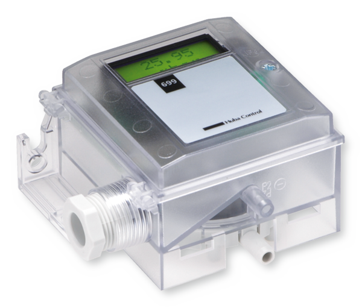

- Серии
- 699 / 699-LCD / GB604 / GB604-CAL.
- Диапазон
- Типовые диапазоны ±50 и ±100 Па в зависимости от исполнения.
- Выход
- 0–10 В DC.
- Питание
- 24 В AC/DC.
- Опция GMP
- GB604-CAL доступен с калибровочным сертификатом.
TROX · DIFFERENTIAL PRESSURE
Статические преобразователи для контроля давления помещений и воздуховодов в системах LABCONTROL.
